introduction to artificial intelligence
sigmoid neurons
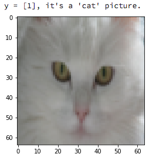
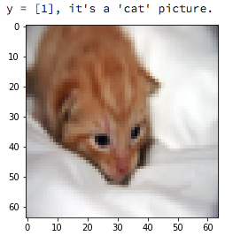
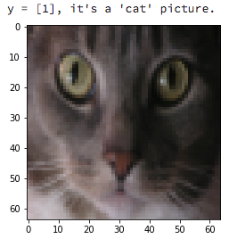
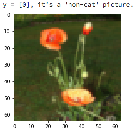
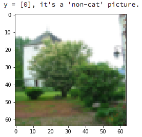
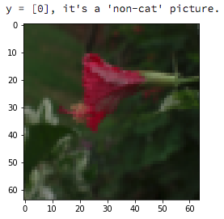
data
Data is stored as 2352-dimensional vectors (tensors of shape 28x28x3). The 28x28 matrix represents the pixels of the picture, and each pixel is a series of three numbers (RGB color mixture). The data will be provided to you as a pickled dictionary with two keys: cat, no_cat. Each key points to a list of tensors representing images.
algorithm
The algorithm for this task is a neural version of logistic regression. This can be done much better with convolutional neural networks.
This is another example of a very simple supervised learning algorithm. We are given a dataset of examples \( D = \{ (x^{(1)}, y^{(1)}), (x^{(2)}, y^{(2)}), \dots, (x^{(n)}, y^{(n)}) \} \), where each x is an input (vector representing an image), and each y is a label (cat or non_cat). This is called a training set.
You will train your neuron to recognize cats, so that given an input \( x \), it produces a prediction \( \hat{y} \). The goal of training is to get your neuron to produce predictions that are close to the true labels on the training set.
Instead of predicting a discrete label directly, we will predict the probability that the image is a cat. For this purpose we will assume that the label for cat is 1, and the label for non_cat is 0.
\[ \hat{y} = P(y=1|x), \hat{y} \in (0,1) \]
In order to do that, we modify our activation function to be \( \sigma(z) = \frac{e^z}{e^z+1} = \frac{1}{1+e^{-z}} \)
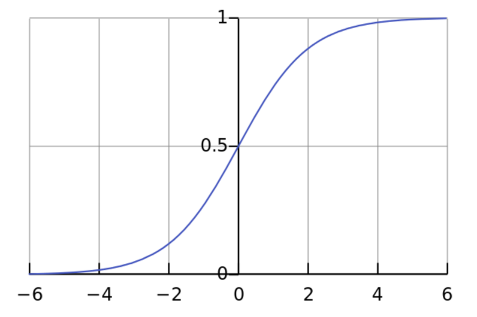
\[ z \rightarrow -\infty \implies \hat{y} \rightarrow 0 \]
\[ z \rightarrow \infty \implies \hat{y} \rightarrow 1 \]
\[ z = 0 \implies \hat{y} = \frac{1}{2} \]
set up
\[ D = \{ (x^{(1)}, y^{(1)}), (x^{(2)}, y^{(2)}), \dots, (x^{(n)}, y^{(n)}) \} \]
\[ z^{(i)} = \sum_j{w_j*x^{(i)}_j} \]
\[ \hat{y} = P(y=1|x) = \sigma(z) = \frac{1}{1+e^{-z}} \]
want: \[ \hat{y}^{(i)} \approx y^{(i)} \]
learning

loss function
Could choose quadratic loss: \[ L(\hat{y}, y) = \frac{1}{2}\left(\hat{y} - y\right)^2 \]
This doesn't work, because it leads to a highly non-convex optimization problem in case of sigmoid activation.
local vs global optima
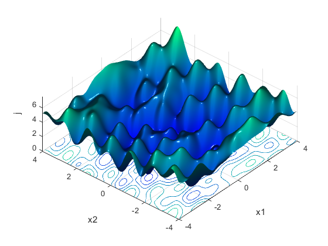

loss function
Instead we will use: \[ L(\hat{y}, y) = -\left(y\log(\hat{y}) + (1-y)\log(1-\hat{y})\right) \]
\[ y=1 \implies L(\hat{y}, y) = -\log(\hat{y}) \]
so we want \( \hat{y} \) to be large, i.e. \( \hat{y} \approx 1 \)
\[ y=0 \implies L(\hat{y}, y) = -\log(1 - \hat{y}) \]
so we want \( \hat{y} \) to be small, i.e. \( \hat{y} \approx 0 \)
cost function
\[ J(w) = \frac{1}{m} \sum_{i=1}^m L(\hat{y}^{(i)}, y^{(i)}) \]
i.e. \[ J(w) = \frac{-1}{m} \sum_{i=1}^m \left(y^{(i)}\log(\hat{y}^{(i)}) + (1-y^{(i)})\log(1-\hat{y}^{(i)})\right) \]
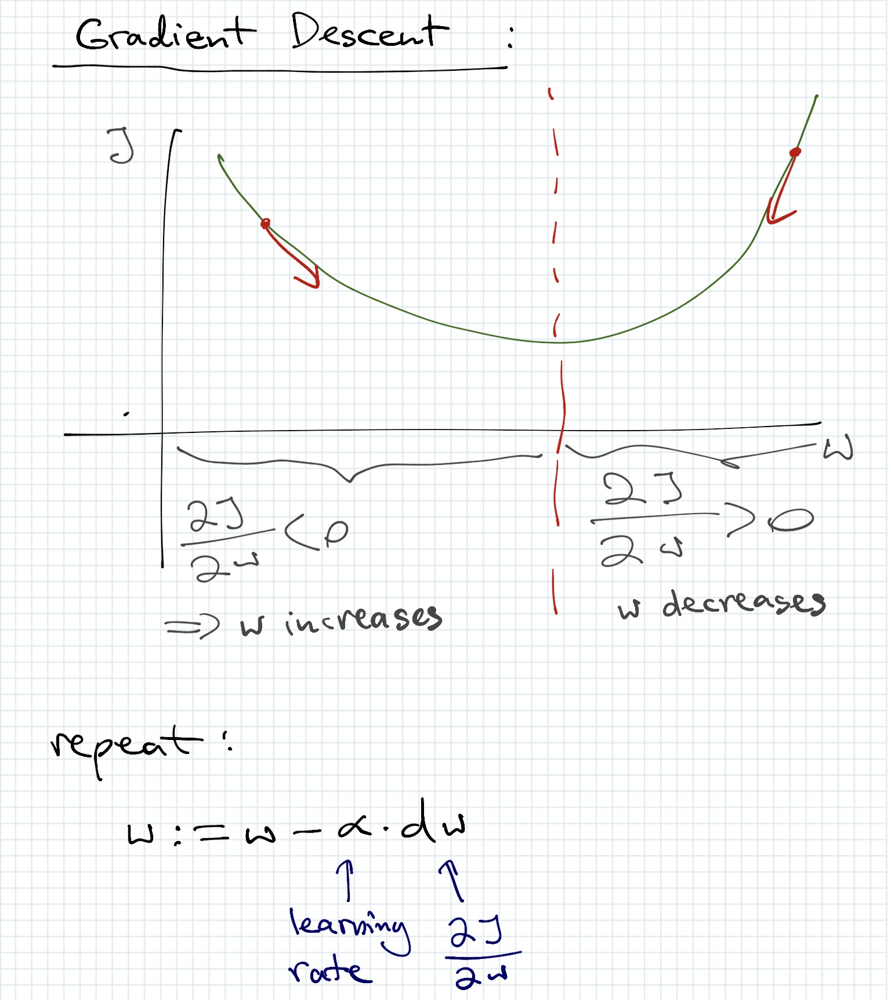
loss function gradient (chain rule)
We commonly denote the function \( \sigma(z) \) (which has value \( \hat{y} \) when evaluated on a particular input x) as \( a \), which stands for "activation".
\[ \frac{\partial L}{\partial w} = \frac{\partial L}{\partial a} \cdot \frac{\partial a}{\partial z} \cdot \frac{\partial z}{\partial w} \]
\[ \frac{\partial L}{\partial w} = (a-y)x \]
Hence, for a particular training example: \[ \frac{\partial L}{\partial w} = (\hat{y}-y)x \]
cost function gradient
\[ \frac{\partial J}{\partial w} = \frac{1}{m} \sum_{i=1}^m \frac{\partial L}{\partial w}(\hat{y}^{(i)}, y^{(i)}) \]
notation for pseudocode
\[ dz = \frac{\partial L}{\partial z} \]
\[ dw = \frac{\partial L}{\partial w} \]
so \[ dw = dz \cdot x \]
putting it together
Assuming the first dimension of x is always 1, so the first dimension of w corresponds to the bias term, repeat this pseudocode multiple times (for some number of epochs):
for i=1 to m:
zi = dot_product(w, x)
ai = sigma(zi)
J += -(yi*log(ai) + (1-yi)*log(1-ai))
dz = ai - yi
dw += xi*dz (in each dimension of w, so you need to loop over all weights)
J /= m
dw /= m
wj = wj - alpha*dwj
cross entropy loss derivation (for training the sigmoid neuron)


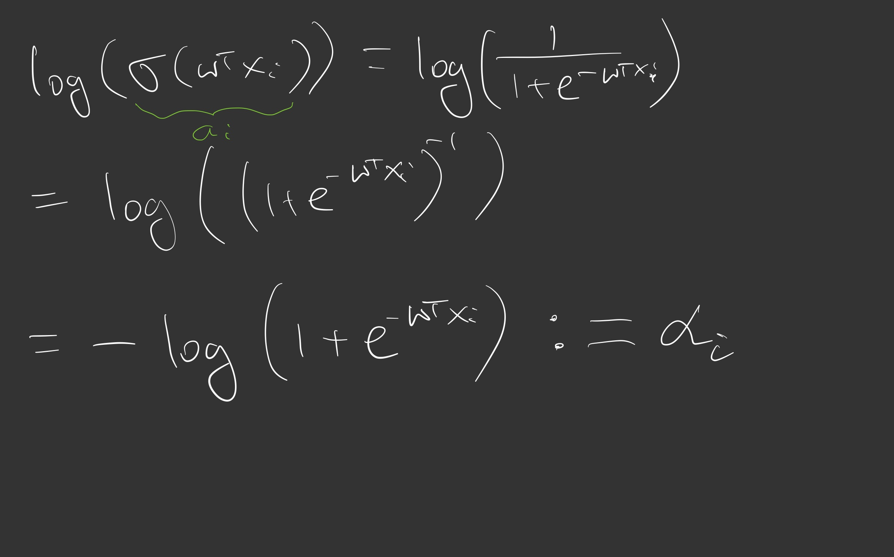
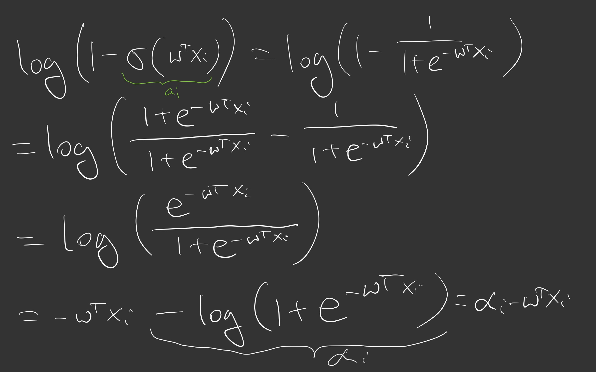
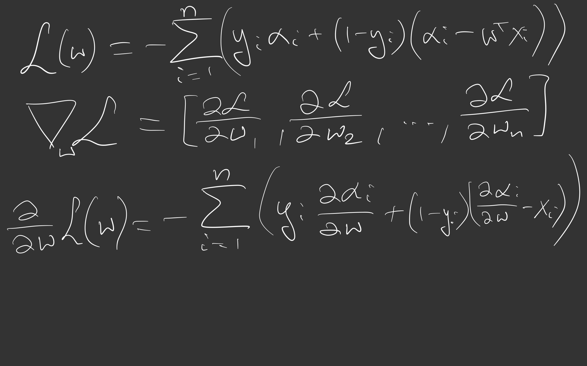
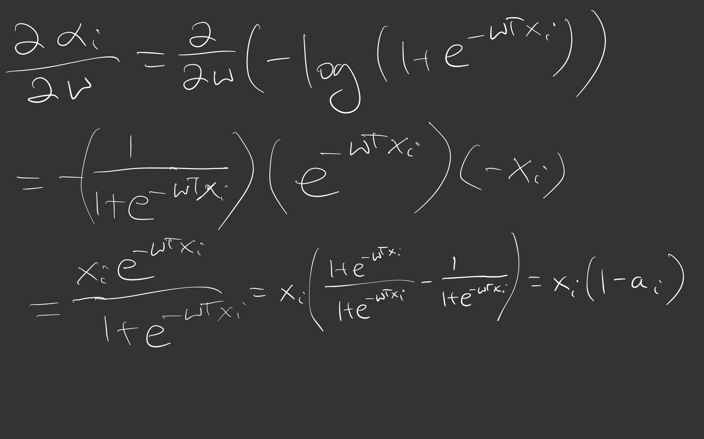
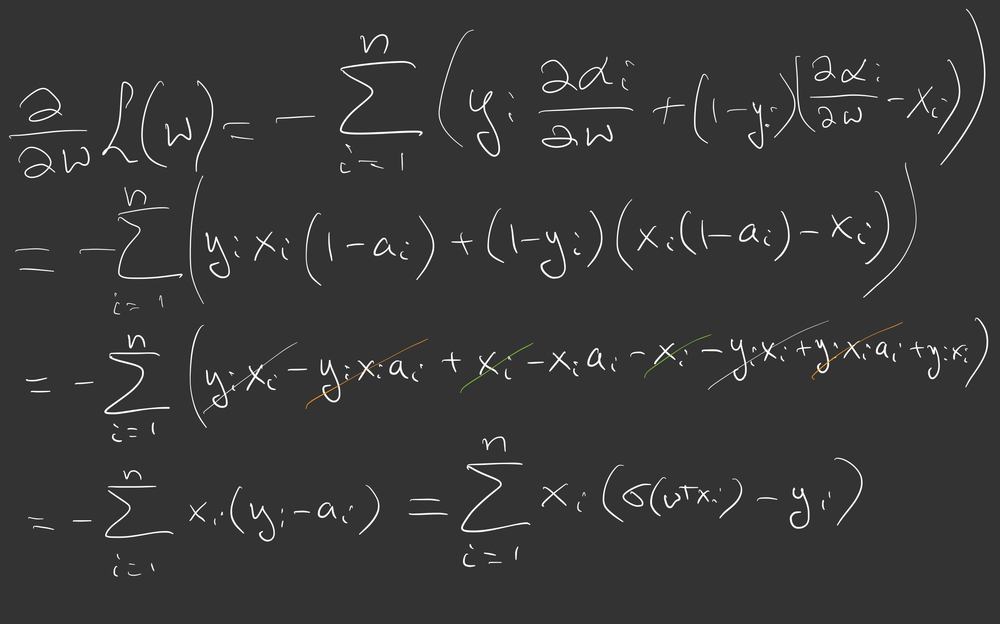

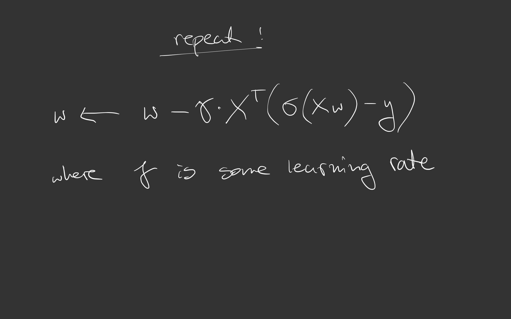